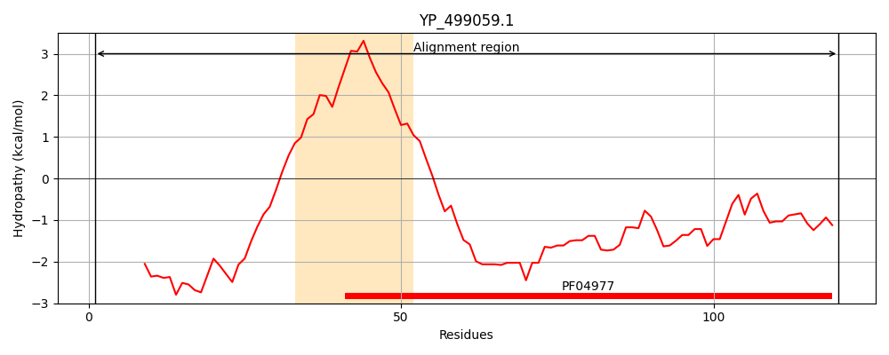
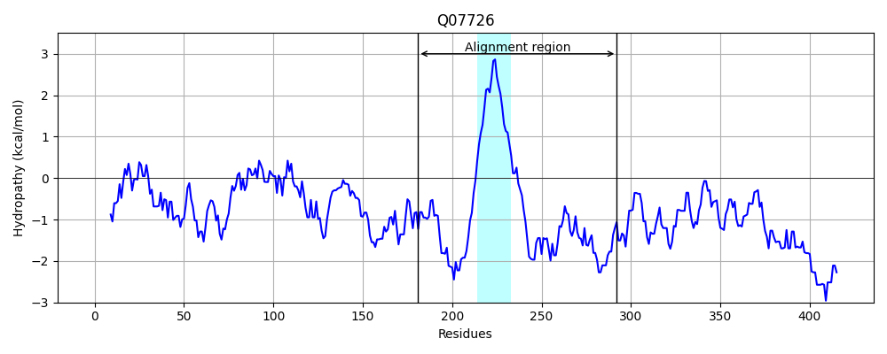
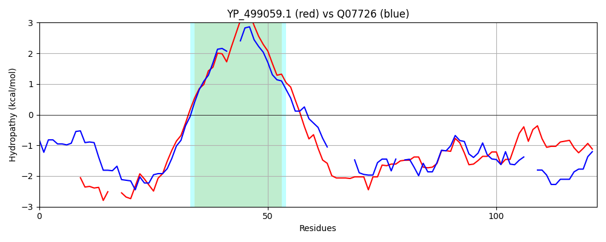

Hit Accession: Q07726
Hit TCID: 3.A.7.7.1
Hit Description: gnl|BL_ORD_ID|12296 gnl|TC-DB|Q07726|3.A.7.7.1 TRSF protein - Staphylococcus aureus.
Mach Len: 122
e:0.000658
Query TMS Count : 1
Hit TMS Count: 1
TMS-Overlap Score: 0.950000
Predicted Substrates:CHEBI:4291;deoxyribonucleic acid
BLAST Alignment:
| Protein Hydropathy Plots: | |
|---|---|
|  |  |
Pairwise Alignment-Hydropathy Plot: | |
|  | |